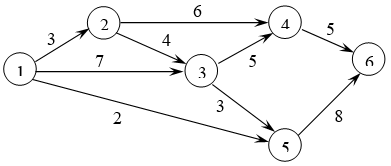
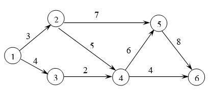
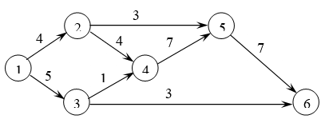
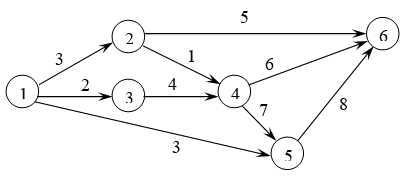
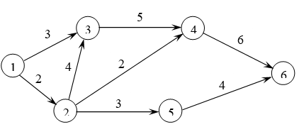
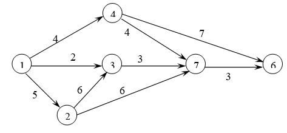
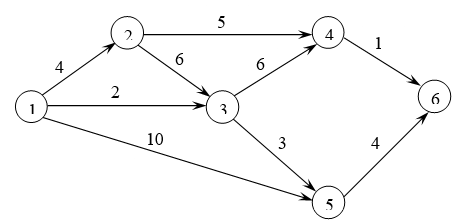
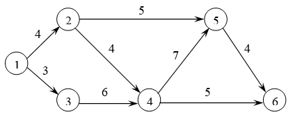
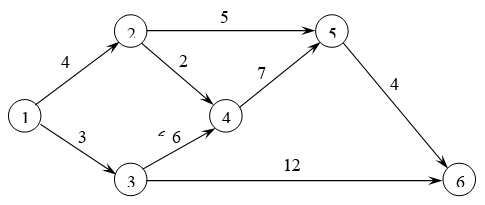
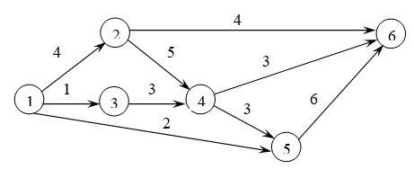

1.1 Изучить основные параметры сетевого планирования.
1.2 Вычислить параметры сетевого графика.
2 Литература:
2.1 Гетманчук А. В. Экономико-математические методы и модели : учеб. пособие для бакалавров / А. В. Гетманчук, М. М. Ермилов. - М. : Издательско-торговая корпорация «Дашков и Ко», 2015. - 188 с. - Электронное издание. - Режим доступа: http://ibooks.ru.
3 Теоретические сведения:
Основным параметром сетевого планирования является критический путь Lкр. Это наиболее протяженная по времени цепочка работ, ведущая от исходного события I к завершающему C.
Длиной критического пути Tкр называется суммарное время выполнения работ критического пути.
Tкр = Σtij
Критический путь определяет время реализации всего комплекса работ. Если задержка на работах вне критического пути может не сказаться на выполнении всего объема работ, то любая затяжка работ на критическом пути неизменно скажется на увеличении времени выполнения всей программы работ и приведет к увеличению критического пути Ткр.
Каждое событие сети xi X, i=1,…, n характеризуется двумя сроками:
Трi – наиболее ранний из возможных сроков свершения события;
Тпi – наиболее поздний из допустимых сроков свершения события (Рисунок 7.1).
Трi – это срок, необходимый для выполнения всех работ, предшествующих данному событию.
Говоря другими словами, Трi соответствует пути максимальной длины от первоначального события I до данного события xi:
Tpi = t(Lmax(I -> xi))
Тпi –это такой срок свершения события, превышение которого вызовет аналогичную задержку завершающего события С.
Тпi соответствует разности между длиной критического пути Ткр и пути максимальной длины от данного события хi до завершающего события С:
Тпi = Ткр - t(Lmax(xi -> C))
Для событий, находящихся на критическом пути, справедливо: Трi = Тпi
Для событий же, не принадлежащих критическому пути, выполняется:
Трi < Tпi
Это означает, что график свершения событий критического пути должен строго соблюдаться, то есть работы на критическом пути должны выполняться точно в срок. Их нельзя сдвигать. Работами же вне критического пути можно маневрировать, сдвигая их начало или окончание в пределах допустимых резервов времени.
Понятие резерва времени характеризует работы сетевого графика. Наибольшее распространение получили понятия полного и свободного резервов времени.
Полный резерв времени Rпij – это максимальное количество времени, на которое можно увеличить продолжительность данной работы tij, не изменяя длины критического пути.
Rпij = Tпj - Tpi - tij
Свободный резерв времени Rcij – это максимальное количество времени, на которое можно увеличить продолжительность данной работы tij, не изменяя ранних сроков начала последующих работ.
Rcij = Tpj - Tpi - tij
Свободный резерв времени является более жестким резервом, чем полный резерв. Если для всех работ, не принадлежащих критическому пути, всегда Rп > 0, то Rс на некоторых работах может быть равен нулю.
4 Задание:
4.1 В соответствии с вариантом рассчитать параметры сетевого графика Tр, Tп, Rп, Rс, Lкр, Tкр (Рисунки 7.2-7.11).
Вариант 1
Вариант 2
Вариант 3
Вариант 4
Вариант 5
Вариант 6
Вариант 7
Вариант 8
Вариант 9
Вариант 10
Рисунки 7.2-7.11
5 Содержание отчета:
5.1 Наименование и цель работы.
5.2 Выполненное задание.
6 Контрольные вопросы:
6.1 Сформулируйте определение сети.
6.2 Сформулируйте определения элементов сетевого графика.
6.3 Приведите определения параметров сетевого планирования Tр, Tп, Rп, Rс, Lкр, Tкр.